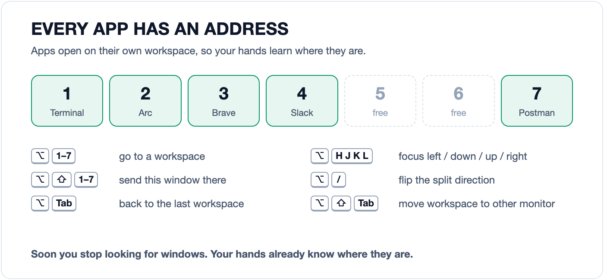
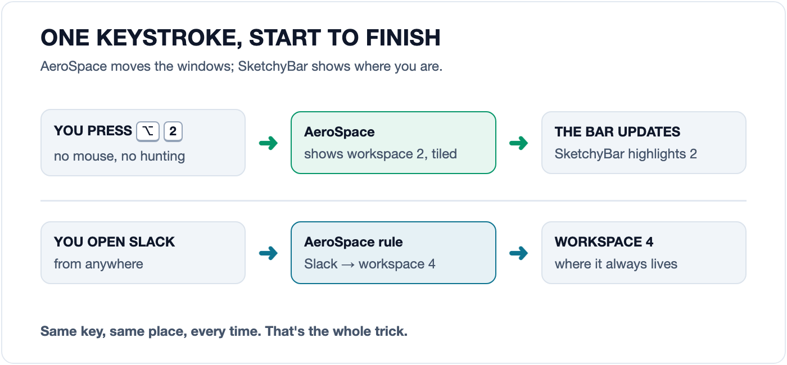

If you've been on a production incident call, you know the moment. Someone says
“can you pull up the error rate?” and you're sharing your screen. You press
⌘ Tab a few times, land on the wrong browser, open Mission Control,
squint at fourteen thumbnails, and finally find the dashboard behind a Slack window.
It takes maybe ten seconds. It feels like a minute, because six people watched
you do it.
The time matters less than the attention. On an incident call, your attention belongs to the problem: what changed, what's failing, and what to try next. Every moment spent finding a window is a moment not spent on any of that.
So I set up my Mac so I never have to look for a window. Every app has a fixed place, every place is one keystroke away, and nothing overlaps. This post walks through the setup, shows it on a mock incident, and covers what it took to make it behave on every MacBook, not only mine.
What the setup is
There are two pieces, both free and open source:
AeroSpace is a tiling window manager. Windows don't float around; they split the screen between them automatically. You move between them, and between workspaces, with the keyboard. It also launches my most-used apps from hotkeys, so there's no separate hotkey daemon to install or give permissions to.
SketchyBar replaces the macOS menu bar with one I can configure. It shows the workspaces, which apps are on each one, and the current app. Battery, volume and Wi-Fi sit on the right.
A single install.sh installs both with Homebrew, links the configs into
~/.config with GNU Stow, and undoes everything if any step fails.
Every app has an address
Most of the speed comes from one simple rule: each app always opens on the same workspace. Terminal goes to 1, Arc to 2, Brave to 3, Slack to 4, Postman to 7. It doesn't matter how I open the app; AeroSpace sees the new window and moves it.

Because the places never change, you stop thinking about them. After a while,
“show the logs” becomes ⌥ 1 without any decision in between. That is
the difference from ⌘ Tab: its order depends on what you used last,
so you have to look every time.
Try it here. Click the demo (or tab to it), then press ⌥ 1 to ⌥ 7:
A mock incident, keyboard only
Each workspace holds one part of the investigation.
Press ⌥ 1–7 or click a key below.
What it looks like on a call
Here is the real thing: a mock incident on my machine, recorded with a script that runs the same AeroSpace commands the shortcuts trigger. The caption in the bar shows which key each step stands for. Logs and metrics are synthetic; I'm not putting a real incident on the internet.
A few things that help most when other people are watching:
Nothing overlaps. Tiled windows can't hide behind each other, so when you share your screen, everyone sees the whole log and the whole graph. No one has to say “scroll up, it's behind the other window”.
Splits follow the conversation. Logs and metrics share workspace 1.
When a line in the logs needs to be wider, ⌥ / stacks them instead of
putting them side by side. Press it again to go back.
Going back is one key. ⌥ Tab returns to the previous
workspace. The most common move on a call is checking the chat and returning to the
dashboard, and that is now two key presses with no looking.
Presenting is one key too. ⌥ ⇧ Tab sends the current
workspace to the other monitor, so the dashboard you're explaining can go on the big
screen while the terminal stays on the laptop.
The bar is part of it
AeroSpace and SketchyBar are separate programs, so they need a way to talk. When the workspace changes, AeroSpace runs a small command that tells SketchyBar, which then highlights the new workspace and updates the app icons for each one.

The bar also stays quiet unless something needs you. The battery icon only appears below 60%, and Wi-Fi turns grey when you're offline. During an incident, the last thing I need is a status bar asking for attention it doesn't deserve.
Making it work on every MacBook
My first version worked on exactly one laptop: mine. Getting it to work across the MacBook range took more work than writing it did.
The notch. MacBooks with a notch keep a strip at the top of the screen that windows can't use. MacBooks without one, and external monitors, don't. One fixed gap either hid windows under the bar on one display or left an empty band on the other. AeroSpace allows a different gap for each monitor, so the built-in display and external monitors now get their own values. The installer checks whether your MacBook has a notch and tells you if you need to change one number.
Intel and Apple Silicon. Homebrew installs to
/opt/homebrew on Apple Silicon and /usr/local on Intel.
Apps opened from Finder also get a minimal PATH, so AeroSpace now adds
both locations itself instead of assuming one.
Wi-Fi names. Since macOS 14.4, scripts without Location Services
access can't read the Wi-Fi network name. The old approach reported you as
disconnected while you were online. The bar now goes by whether you have an IP
address and finds the Wi-Fi interface instead of assuming en0.
The bar was leaking processes. While testing, I found 525 stuck processes on my own machine. Every app switch made each of the seven workspace items ask AeroSpace for its windows, and now and then the call never returned. A productivity setup with a process leak is a special kind of irony. Now one script updates all seven items with one query, the query has a two-second timeout, and only one update can run at a time.
What it costs
It isn't free, and I'd rather say so up front:
The first few days are slower. Your hands still reach for the mouse
and ⌘ Tab. It's worth practising on a quiet day, not discovering
the shortcuts during an outage.
Option is taken. On German, Nordic and some other keyboard layouts,
⌥ plus a letter types characters like @ and [.
If you need those, change the modifier for the keys you type with.
Some apps don't like tiling. Small dialogs and some settings windows
look odd when tiled. ⌥ ⇧ Space lets a window float.
Permissions and versions. AeroSpace needs Accessibility access and macOS 13 or newer.
Try it
git clone https://github.com/bandari-abhilash/dotfiles.git
cd dotfiles
./install.sh
The installer tells you what it's doing, pauses at the one step that needs you
(the Accessibility permission), and rolls everything back if a step fails.
./uninstall.sh removes it all again. Change the app list in
aerospace.toml to match your own: the specific apps matter less than
each one having a fixed place.
None of this will fix an outage for you. What it can do is make sure that, while you're fixing one, your laptop isn't one more thing in the way.
The configs, the installer and the demo recording script are all on GitHub: github.com/bandari-abhilash/dotfiles. If it breaks on your Mac, open an issue and include your model. That's exactly the kind of bug I want to hear about.